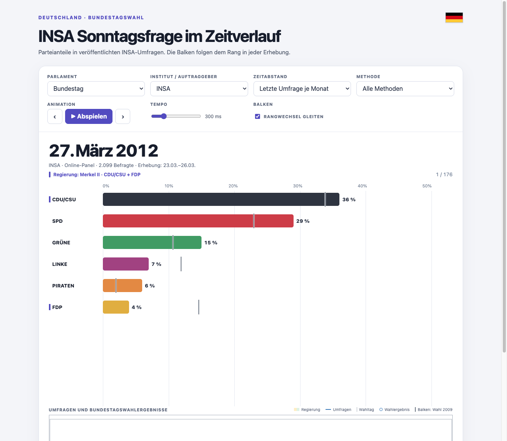

Sonntagsfrage
German election polls over time
Explore polling trends, election results, and government periods in an interactive chart. Choose a parliament, filter the polls, or play through the timeline.
The chart interface and the rest of the site are in German.
